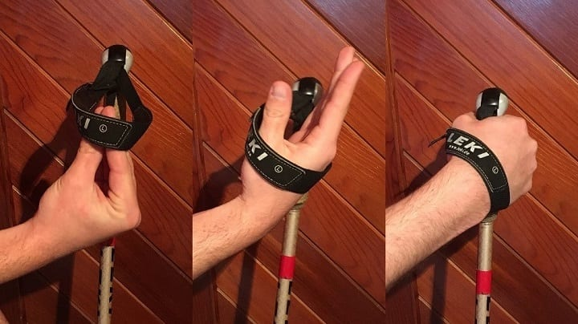

Tips for Trekking Poles
While I was testing out my new bottom pocket, my dad was ordering a pair of trekking poles in preparation for our upcoming trip to Peru. Talking to him over the phone, he told me he was going to take his poles out for a test drive, so I quickly gave him a couple pointers on how to utilize them. I don’t know when or where I learned these things, but I thought these tips might be helpful for others so I’ll share them here.
Tip #1
Most trekking poles are adjustable. As a rule of thumb, they should be extended so that when you hold your arms in an “L-shape” (elbows bent at 90 degrees, forearms parallel to the ground) the poles touch the ground. You can obviously make your poles longer or shorter based on preference, but this is a great length to start if you’re a first timer.
Tip #2
Your hands go through the straps from underneath—not above. The straps should curve around your palm/wrist, not dangle loosely. Like this:
Tip #3
“Grips to go up, ends to descend.” Remember this saying for advice on how to best utilize the poles when you’re ascending and descending. Basically, when climbing you can hold the grips and push down and behind to propel yourself forward. Conversely, you can cup the ends of the poles when you descend to extend their functional length. This allows you to put the poles ahead of your feet and cushion each step.
Hopefully those tips help you get comfortable using trekking poles!